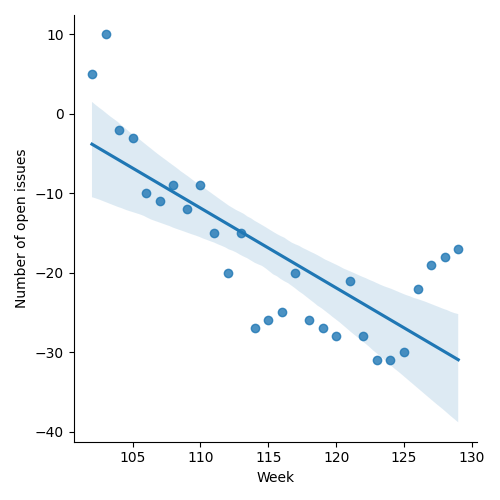
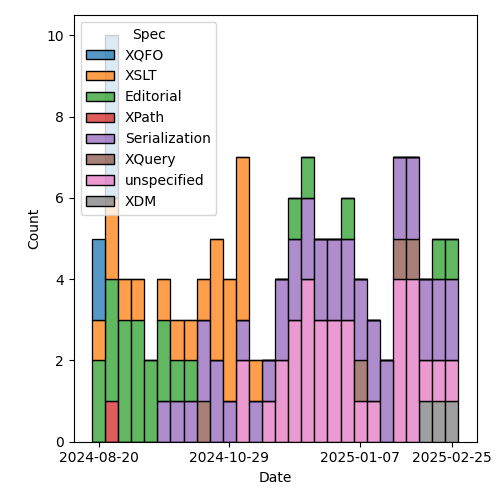
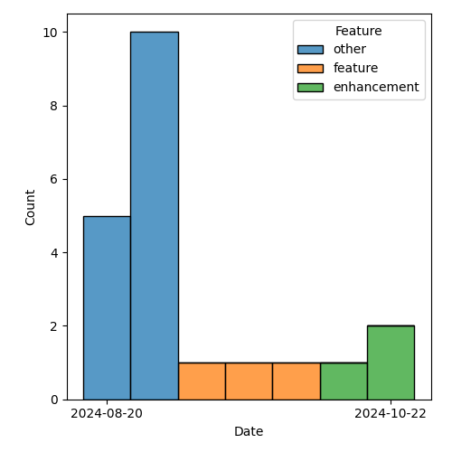

QT4 CG Meeting 111 Minutes 2025-02-25
Meeting index / QT4CG.org / Dashboard / GH Issues / GH Pull Requests
Table of Contents
- Draft Minutes
- Summary of new and continuing actions
[0/7] - 1. Administrivia
- 2. Technical agenda
- 2.1. Review of pull requests
- 2.1.1. PR #1837: 1834 Additional clarification on JSON lines
- 2.1.2. PR #1833: 583 Drop map:replace and array:replace
- 2.1.3. PR #1830: 1829 Reintroduce restrictions on RHS of `=>`
- 2.1.4. PR #1828: 1815 Add more detail on annotations of function items
- 2.1.5. PR #1825: 1816 New function fn:partial-apply
- 2.1.6. PR #1817: 1800 Methods
- 2.1. Review of pull requests
- 3. Any other business
- 4. Adjourned
Draft Minutes
Approved at meeting 112 on 4 March 2025.
Summary of new and continuing actions [0/7]
[ ]QT4CG-082-02: DN to work with MK to come to agreement on the fn:ranks proposal[ ]QT4CG-107-05: JLO and DN to consider a proposal for system defined records.[ ]QT4CG-110-03: JWL to consider writing a PR for issue #322, xsl:record instruction[ ]QT4CG-110-04: JK to consider a PR for #366, xsl:use-package with xsl:package-location[ ]QT4CG-111-01: MK to review the editorial comments on PR #1837 and then merge the PR.[ ]QT4CG-111-02: MK to fix the typo$in as xs:double+and1.3. 1.4that middle “.” should be a “,”[ ]QT4CG-111-03: MK to add a%methodexample that uses the arrow syntax.
1. Administrivia
1.1. Roll call [12/13]
[X]David J Birnbaum (DB)[X]Reece Dunn (RD)[ ]Sasha Firsov (SF)[X]Christian Grün (CG)[X]Joel Kalvesmaki (JK)[X]Michael Kay (MK)[X]Juri Leino (JLO)[X]John Lumley (JWL)[X]Dimitre Novatchev (DN)[X]Wendell Piez (WP)[X]Ed Porter (EP)[X]Bethan Tovey-Walsh (BTW)[X]Norm Tovey-Walsh (NW). Scribe. Chair.
1.2. Accept the agenda
Proposal: Accept the agenda.
Accepted.
1.2.1. Status so far…
These charts have been adjusted so they reflect the preceding six months of work.

Figure 1: “Burn down” chart on open issues

Figure 2: Open issues by specification

Figure 3: Open issues by type
1.3. Approve minutes of the previous meeting
Proposal: Accept the minutes of the previous meeting.
Accepted.
1.4. Next meeting
The next meeting is planned for 4 March 2025.
No regrets heard.
1.5. Review of open action items [3/7]
(Items marked [X] are believed to have been closed via email before this agenda was posted.)
[ ]QT4CG-082-02: DN to work with MK to come to agreement on the fn:ranks proposal[X]QT4CG-097-02: MK to make the XSD schema component references into links to XSD[ ]QT4CG-107-05: JLO and DN to consider a proposal for system defined records.[X]QT4CG-110-01: MK to fix the incorrect termrefs in the data model the merge the PR.[X]QT4CG-110-02: MK to review the error pointed out in one of the examples for arrow expressions and then merge[ ]QT4CG-110-03: JWL to consider writing a PR for issue #322, xsl:record instruction[ ]QT4CG-110-04: JK to consider a PR for #366, xsl:use-package with xsl:package-location
1.6. Review of open pull requests and issues
This section summarizes all of the issues and pull requests that need to be resolved before we can finish. See Technical Agenda below for the focus of this meeting.
1.6.1. Merge without discussion
The following PRs are editorial, small, or otherwise appeared to be uncontroversial when the agenda was prepared. The chairs propose that these can be merged without discussion. If you think discussion is necessary, please say so.
- PR #1826: Fix grammar bug #1818
- PR #1824: 1823 Revise top-level headings in F+O spec
- PR #1814: 1813 Reorganise the XDM spec at top level
- PR #1812: 1811 Add note regarding non-XML chars in xsl:output-character
Proposal: Merge without discussion.
Accepted.
2. Technical agenda
2.1. Review of pull requests
I don’t actually think we’ll get through all of these. Let’s reserve 15 minutes at the end of the call for issue triage. See the list below.
2.1.1. PR #1837: 1834 Additional clarification on JSON lines
See PR #1837
MK reviews the PR.
- CG: I think there are some editorial comments to address before we merge.
Proposal: Accept this PR; MK to review editorial comments and then merge.
Accepted.
ACTION QT4CG-111-01: MK to review the editorial comments on PR #1837 and then merge the PR.
2.1.2. PR #1833: 583 Drop map:replace and array:replace
See PR #1833
- MK: These functions have been around for a long time but there are no tests.
They can be user written in about 1 or 2 lines of code.
- … There have been issues open against them, easiest solution is to drop them.
- JLO: In the issue there is a reference to both for-each with positional arguments and the new syntax. Both say we could use these. But they aren’t in the language anymore.
- MK: We don’t yet have update expressions…but these are the same as a get and a put.
Proposal: Accept this PR.
Accepted.
2.1.3. PR #1830: 1829 Reintroduce restrictions on RHS of `=>`
See PR #1830
MK introduces the PR.
- MK: We were over-enthusiastic in deciding the right hand side could be either
a static or dynamic function call.
- … I found considerable difficulties implementing this. Consider a static function that returns a dynamic function that’s then called. That requires arbitrary look-ahead.
- … This adds more restrictions, but it’s still a little more relaxed than it was.
MK reviews the grammar changers in 4.24 of the XPath spec.
- MK: The aim is restrict it as little as possible while making the syntax unambiguous.
- DN: We’re looking at the XQuery implementation, but this also applies to XPath, yes?
- MK: Yes, this is common text to XQuery and XPath.
- DN: It would be good to have an example of a function on the RHS of the
=>operator that is not allowed anymore. It would be good to know what you can’t do. - MK: The only things we’ve removed are things we added a couple of weeks ago; this isn’t changing anything that users could have done.
Proposal: Accept this PR.
Accepted.
Some discussion of JWL attempting the conversion to iXML. General consensus: it’s a good idea.
- CG: GR added some comments to the issue.
2.1.4. PR #1828: 1815 Add more detail on annotations of function items
See PR #1828
- MK: I discovered that we didn’t actually say anywhere that if you have a named
function reference that the named function you create is going to have the
annotations on the declaration.
- … But that seemed a reasonable expectation.
- … Then I looked more generally at what we say about things that generate function items and what annotations should appear.
- … I found lots of gaps; one question is should function annotations be
retained when you do partial application. I made a fairly arbitrary choice
on that. I decided that partial function application should retain the
annotations. This is primarily so that calling a function with
?in the arguments gives you the same results as a static function reference. That’s something that optimizers are likely to treat as equivalent. - … I’m not that familiar with the function annotation use cases so I’m relying on others to give feedback.
- … In the data model spec, I’ve drawn out annotations as a separate property from the signature. That seems to make sense.
MK reviews the changes in XQuery.
- MK: A little reorganization to the section on function items.
- JLO: I like the proposal. I think the choice to make function annotations
stick to a partially applied one does make sense.
- … It might be that annotations were regarded as part of the signature, but I don’t see why.
- CG: I agree with JWL, I think it makes sense to keep the annotations. I haven’t worked that much with partial function applications in this context, but the use cases I can imagine do make sense to keep the annotations.
Proposal: Accept this PR.
Accepted.
2.1.5. PR #1825: 1816 New function fn:partial-apply
See PR #1825
- MK: This is a new function that I put in because I discovered something I
couldn’t do without it. A typical example is that you might now that you’re
being passed a function that expects a node as its first argument and you want
to partially apply it for a particular node, but you don’t know what the other
arguments are.
- … My original proposal in the issue was to overload the current
fn:applyfunction, but I decided that it was sufficiently different that it should be its own function.
- … My original proposal in the issue was to overload the current
MK reviews the function specification.
- MK: This is a primitive; you can’t define it in terms of current functionality.
- JK: This looks great. Any thoughts to whether it should or should not be extended to XSLT?
- MK: What would you want to do?
- JK: I think I’ve made functions of five or six arity and you get stuck because
of the order. Perhaps this could be used to simplify things. But maybe that’s
half-baked.
- … If you could get a partial function, could you also cache it?
- MK: It applies to function items, so it only applies to the positions. You can’t use argument names.
- DN: I’m trying to imagine where this would be useful. Where would I prefer to
use this partial apply rather than specify immediately the partial application
of the function? It’s a bit difficult to see what the uses are.
- … It seems like it would be limited to a very small audience with people. I use partial application all the time and I’ve never had the need for this feature.
- MK: The immediate case I had was actually in the specification itself. There
was a case where I wanted to bind the first argument of the function
regardless of what it was. It was something to do with arrow expressions.
- … The other case I’ve had is that you want to bind the collation argument where all you know about the function is that it’s last argument is a collation.
- … It is certainly highly specialzed, but it is one you can’t write yourself.
- … It means you can operate on a class of functions. For example, you might know that it’s a binary function on doubles.
- DN: Maybe then we could think about producing a type of functions that have a first argument with a specific type and then some positions with other types. This function expects this parameter function should be passed as a parameter a function of this type.
- MK: That’s a lot of elaborate machinery, where this is just a primitive on which this machinery could be built.
- DN: Then don’t we need more specific types?
- MK: The other argument is that it fits into the same space as
fn:applyand there were similar arguments about that. It’s very specialized, but it enables things that you couldn’t otherwise do. - RD: I’m thinking you could use this as the basis of a dynamic formatting
utility by using
fn:concatand changing the positions where you’re inserting items based on some conditional logic. - CG: Maybe my comment is related to DN. I can imagine that there are use cases,
but I wonder if there are any good examples that we could give for it. Like
fn:apply, it’s hard to write good examples. - MK: Partially binding the options parameter which is always last might be an example.
- JLO: For an example, I think that it might be possible to make one based on
fn:serializewhich I use a lot. I also usefn:applya lot because it’s needed for function application.- … I think the question marks are somewhat clever and I think this would be more versatile. It allows the function to be called to be a parameter.
- … I like this.
Proposal: Accept this PR.
Accepted.
2.1.6. PR #1817: 1800 Methods
See PR #1817
- MK: This is a response to DN’s comments on the horrible properties of the
=?>operator. I thought those criticisms were eloquently expressed. This is about functions that are members of a record and have implicit access to the record with that awful squiggly arrow.
MK looks at the proposal in the XQuery specification, sectoin 4.5.2.6.
- MK: A
%methodfunction has an implicit argument named$thisthat’s bound to the record or map where the function lookup occurred.- … The lookup operator now does more than a get. If it finds a method, it does a partial application binding the implicit parameter to the map.
- … What you get back from the lookup is a normal function, you can pass it around.
- … This isn’t really like object oriented programming. There’s no encapsulation or inheritance or overriding, etc.
- … The
$thisis applied at the point of lookup. - … You can use it for creating a recursive function in XPath.
- JWL: Are there more restrictions on this when it’s in XPath?
- MK: XPath didn’t have general function annotations; rather than adding that
mechanism, I’ve just added
%method. - DN: I want to thank MK for this. Nearly everything that was raised in my
comments has been addressed. This is a tremendous improvement. There are just
one or two small things that remain.
- … I proposed some lexical abbreviations so that the user doesn’t have to use
$thisexplicitly can use some symbol. I proposed^. It could be lexically expanded to$this. This further goes in line with the current practice of OO languages where one can usethis.but one can omitthis.in some cases.
- … I proposed some lexical abbreviations so that the user doesn’t have to use
[ DN fell off Zoom in mid-sentence at this point. ]
- NW: I’ll open a separate issue for DN’s syntactic sugar issues.
- NW: While we wait for DN to rejoin, why don’t you make your comments, CG.
- CG: I haven’t fully digested all the details. Could you go back to the examples?
MK scrolls back to the examples in 4.5.2.6.
Some discussion of the use of %method functions as a normal function. Passing
a map only works if you don’t use the lookup operator.
ACTION QT4CG-111-02: MK to fix the typo $in as xs:double+ and 1.3. 1.4 that middle “.” should be a “,”
- CG: Could we allow this for dynamic function calls as well?
- MK: Oh, yes, I think it’s worth an example of using it with the arrow syntax.
ACTION QT4CG-111-03: MK to add a %method example that uses the arrow syntax.
- MK: This is based on the lookup operator in order to constrain the side effects.
- … Overloading
?instead ofmap:getbecause it would be too extreme.
- … Overloading
- JLO: I like this. But the example of calling it as a normal function is hard to understand.
- MK: Yes, more explanation might be good.
- JWL: Is the
%methodannotation accessible? - MK: Yes.
Proposal: Accept this PR.
Accepted.
3. Any other business
None heard.